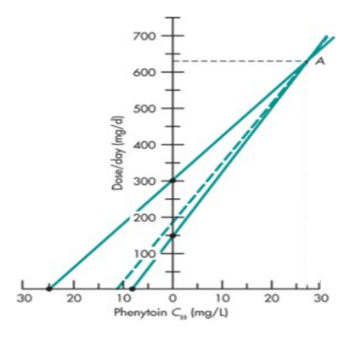

111 年第 2 次藥師藥劑學與生物藥劑學試題與答案
這一頁是民國 111 年第 2 次藥師藥劑學與生物藥劑學的整份歷屆試題，共 80 題，題目與標準答案出自考選部「國家考試試題及測驗式試題答案」開放資料，其中 71 題附有詳解。以下逐題列出題幹、選項與答案；要計時作答或記錄成績，請用線上練習。
考選部原始場次代碼：111100
線上作答這一科 →
全部 80 題
第 1 題
天平之靈敏度需求（sensitivity requirement）為 5 mg，秤重時為避免誤差超過 5%，其最小秤取量（minimum weighable quantity）為若干 mg？
- （A）10
- （B）50
- （C）100
- （D）200
答案：（C）
詳解與考點
正解：天平的 sensitivity requirement 是可能的絕對秤量誤差；若要把相對誤差控制在 5%，最小秤取量以 minimum weighable quantity = sensitivity requirement × 100 / allowable error 計算。代入：5 mg × 100 / 5 = 100 mg；（C）為最小可秤量，故選 C。
A：以 10 mg 秤量時，相對誤差 = 5 mg / 10 mg × 100% = 50%，超過容許的 5%。
B：以 50 mg 秤量時，相對誤差 = 5 mg / 50 mg × 100% = 10%，仍超過容許值。
D：以 200 mg 秤量時，相對誤差 = 5 mg / 200 mg × 100% = 2.5%，雖可控制誤差，但不是符合條件的最小秤取量。
本題考點：最小秤取量（minimum weighable quantity）——先以天平靈敏度除以容許相對誤差，再確認所得量是可接受誤差下的最小值；相對秤量誤差（relative weighing error）——用 sensitivity requirement / sample weight × 100% 判斷秤取量是否足夠。
第 2 題
水的蒸氣壓為23.76 mmHg時，相同溫度下，1,000 mL水加入50 g葡萄糖，其蒸氣壓為若干mmHg？
- （A）20.31
- （B）23.64
- （C）23.76
- （D）24.51
答案：（B）
詳解與考點
正解：葡萄糖是非揮發性溶質，依 Raoult's law，溶液蒸氣壓以水的莫耳分率乘純水蒸氣壓。以 1,000 mL 水約為 1,000 g 計，水的莫耳數 = 1,000 g / 18 g/mol = 55.56 mol；葡萄糖的莫耳數 = 50 g / 180 g/mol = 0.278 mol。水的莫耳分率 = 55.56 / (55.56 + 0.278) = 0.9950。故 P = 0.9950 × 23.76 mmHg = 23.64 mmHg；（B）正確，故選 B。
A：20.31 mmHg 代表蒸氣壓下降過多，未依水在溶液中的莫耳分率計算。
C：23.76 mmHg 是純水的蒸氣壓，等於忽略加入的非揮發性葡萄糖。
D：24.51 mmHg 高於純水蒸氣壓；非揮發性溶質加入後應降低水的蒸氣壓，不會使其升高。
本題考點：拉午耳定律（Raoult's law）——非揮發性溶質的稀溶液以溶劑莫耳分率乘純溶劑蒸氣壓；莫耳分率（mole fraction）——比較蒸氣壓時先把各成分換成莫耳數，不能直接以質量比代替。
第 3 題
依中華藥典，有關軟塊狀與粉末「顛茄浸膏」製備過程之敘述，下列何者錯誤？
- （A）軟塊狀浸膏是以乙醇與水之混合液為浸溶劑，粉末浸膏是以乙醇為浸溶劑
- （B）依規定浸漬後，軟塊狀浸膏以中速度進行滲漉，粉末浸膏以慢速度進行滲漉
- （C）軟塊狀浸膏與粉末浸膏之滲漉液，均在 60 ℃以下減壓蒸發至軟塊狀
- （D）若須調整有效成分含量時，軟塊狀浸膏可用液狀葡萄糖稀釋，粉末浸膏可用乾燥氧化鎂稀釋
答案：（D）
詳解與考點
正解：此題辨認的是兩種顛茄浸膏在規定製程中可用的含量調整材料。顛茄的有效成分為 hyoscyamine、atropine 等 tropane 生物鹼酯類，調整含量所用的稀釋劑須為中性且不與之作用者；（D）以乾燥氧化鎂稀釋粉末浸膏，氧化鎂呈鹼性，會促使生物鹼酯鍵水解而降低效價，粉末浸膏一般係以乳糖等中性稀釋劑調整，故（D）的配對不符該品項的製備規範，為錯誤敘述，故選 D。
A：軟塊狀浸膏採乙醇與水的混合液浸溶，粉末浸膏以乙醇浸溶，符合兩者規定的萃取溶媒差異。
B：兩種浸膏在規定浸漬後的滲漉速度不同，軟塊狀浸膏為中速度，粉末浸膏為慢速度，敘述正確。
C：兩者的滲漉液都須在 60 ℃以下減壓濃縮至軟塊狀，先避免高溫造成有效成分損失，敘述正確。
本題考點：顛茄浸膏製備（Belladonna extract preparation）——比較同一藥材的不同浸膏時，逐項核對浸溶劑、滲漉速度、濃縮條件與含量調整材料；滲漉法（percolation）——遇到製程題時，不能把不同劑型的輔料或操作條件互相套用。
第 4 題
依據中華藥典對酊劑濃度之規定標準，每 100 mL 代表劇藥、普通藥品及新鮮生藥之效能，分別為 a、 b及c 克，則（a，b，c）為若干？
- （A）（5，10，20）
- （B）（10，20，50）
- （C）（20，10，5）
- （D）（50，20，10）
答案：（B）
詳解與考點
正解：題幹比較的是酊劑每 100 mL 所代表的生藥效能，劇藥、普通藥品與新鮮生藥依序為 10 g、20 g、50 g；（B）符合此濃度標準，故選 B。
A：5 g、10 g、20 g 將三類藥材的代表量都訂得過低，並非規定濃度。
C：20 g、10 g、5 g 將劇藥與普通藥品的量級顛倒，也把新鮮生藥的代表量大幅低估。
D：50 g、20 g、10 g 把最高代表量配置給劇藥，與劇藥應採較低生藥當量的濃度標準不符。
本題考點：酊劑濃度標準（tincture strength）——比較不同生藥來源的酊劑時，以每 100 mL 所代表的生藥量判定；生藥當量（crude drug equivalent）——題目同時列劇藥、普通藥品與新鮮生藥時，要按各類別的規定量逐一配對，不可只看數字大小。
第 5 題
依中華藥典，下列何者所表示之溶解度最低？
- （A）易溶
- （B）可溶
- （C）略溶
- （D）微溶
答案：（D）
詳解與考點
正解：藥典的溶解度用語以溶解一定量溶質所需溶媒量判斷，所需溶媒越多表示溶解度越低；在題列四者中，（D）微溶所需溶媒量最多，故選 D。
A：易溶表示少量溶媒即可溶解，溶解度遠高於微溶。
B：可溶雖不及易溶，仍比略溶與微溶容易溶解。
C：略溶所需溶媒量高於可溶，但在題列分級中仍低於微溶。
本題考點：藥典溶解度用語（pharmacopoeial solubility terms）——看到易溶、可溶、略溶、微溶時，以所需溶媒量由少到多排序，而不是憑字面強弱猜測；溶媒量判讀（solvent requirement）——同量溶質需要越多溶媒，實務上越要注意溶解與配方限制。
第 6 題
將0.4 mole之NaOH加到體積為1 L之0.2 M HCl溶液後，pH從1.7上升到2.5，其緩衝容量（buffer capacity）為若 干？
- （A）0.25
- （B）0.5
- （C）0.625
- （D）1.25
答案：（B）
詳解與考點
正解：緩衝容量以每單位體積改變 1 個 pH unit 所需加入的強酸或強鹼量表示，故用加入的 NaOH 濃度除以 pH 變化。先換成濃度：0.4 mol / 1 L = 0.4 mol/L；pH 變化 = 2.5 - 1.7 = 0.8。代入：β = 0.4 mol/L / 0.8 = 0.5 mol/(L·pH)；（B）正確，故選 B。
A：0.25 來自以起始 0.2 M HCl 除以 0.8；緩衝容量應用滴定時加入的強鹼量，不是起始酸濃度。
C：0.625 無法由題給的 0.4 mol/L 與 pH 變化 0.8 正確相除得到。
D：1.25 會需要把分子誤作 1.0 mol/L；題目並未給出這樣的加入強鹼量。
本題考點：緩衝容量（buffer capacity）——以 β = ΔC / ΔpH 計算，分子取每公升加入的強酸或強鹼當量；pH 變化（pH change）——先用終點 pH - 起點 pH 求差值，不能以起始溶液濃度替代。
第 7 題
依據Gibbs自由能公式，表面積100 cm2的油要形成穩定o/w型乳劑，乳劑中每個油滴表面積為 1x10-10 cm2共 4x1012個，則界面張力所須降低的倍數至少約為若干？
- （A）4
- （B）40
- （C）400
- （D）4,000
答案：（A）
詳解與考點
正解：Gibbs 自由能的界面項與界面張力及總界面積成正比。油滴總表面積 = 4 × 10^12 × 1 × 10^-10 cm2 = 4 × 10^2 cm2 = 400 cm2；相對初始 100 cm2，總界面積變成 4 倍。要使界面自由能不因增加界面積而提高，界面張力需降為原來的 1/4，也就是至少降低 4 倍；（A）正確，故選 A。
B：40 倍不是由 400 cm2 / 100 cm2 的界面積比求得，並非本題所需的最低降低倍數。
C：400 倍把乳化後的總面積數值直接當成降低倍數，漏掉與原始面積比較的步驟。
D：4,000 倍同樣未依總界面積與初始界面積的比值判斷，遠非計算結果。
本題考點：Gibbs 自由能（Gibbs free energy）——乳化後界面積增加時，以降低界面張力來降低界面自由能負擔；界面張力（interfacial tension）——先算乳化前後總界面積的比值，再反推至少需降低的比例。
第 8 題
Sodium lauryl sulfate使用時，為保有其離子特性最適合之酸鹼值為何？
- （A）大於8
- （B）介於6至7.9
- （C）介於3至5.9
- （D）小於2.9
答案：（A）
第 9 題
帶正電的藥品欲製備成w/o型穩定的乳劑時，選用下列何種乳化劑最適當？
- （A）Span 60
- （B）Tween 60
- （C）sodium lauryl sulfate
- （D）benzalkonium chloride
答案：（A）
詳解與考點
正解：帶正電藥物要製成穩定 w/o 乳劑時，乳化劑須有油相親和性，且宜避免不必要的離子交互作用；（A）Span 60 是低 HLB 的非離子性乳化劑，適合形成 w/o 乳劑，故選 A。
B：Tween 60 的 HLB 較高、親水性較強，主要用於 o/w 乳劑，型態與題目要求相反。
C：sodium lauryl sulfate 是陰離子性且親水的乳化劑，傾向形成 o/w 乳劑，也可能與帶正電藥物發生離子作用。
D：benzalkonium chloride 是陽離子性界面活性劑，並非提供 w/o 所需低 HLB 油相親和性的首選。
本題考點：HLB 系統（hydrophilic-lipophilic balance）——要配製 w/o 乳劑時，優先選低 HLB、油相親和性高的乳化劑；離子相容性（ionic compatibility）——藥物與乳化劑帶相反電荷時，還要注意離子配對或沉澱等不穩定作用。
第 10 題
乳劑安定性測試時，最常用的低溫條件為若干℃？
- （A）-20
- （B）0
- （C）5
- （D）25
答案：（C）
詳解與考點
正解：乳劑的低溫安定性試驗通常以冷藏條件觀察相分離、黏度改變與結晶等變化；（C）5 ℃是最常用的低溫條件，故選 C。
A：-20 ℃較屬嚴苛的冷凍或凍融條件，不是一般低溫安定性試驗最常用的設定。
B：0 ℃接近水相凍結點，容易引入凍結造成的額外破壞，不能代表通常的冷藏測試。
D：25 ℃屬室溫條件，可作一般貯存觀察，但不屬低溫測試。
本題考點：乳劑安定性試驗（emulsion stability testing）——比較低溫貯存時，先區分冷藏條件與冷凍／凍融應力試驗；相分離（phase separation）——低溫觀察的重點是乳滴聚集、結晶或黏度改變是否破壞乳劑均一性。
第 11 題
當乳劑產生coalescence（A）與flocculation（B）時，最主要差別在於？
- （A）A為可逆
- （B）B為可逆
- （C）A不會沉澱
- （D）B不會沉澱
答案：（B）
詳解與考點
正解：coalescence 是液滴彼此融合成較大液滴，原本液滴界面消失，因此通常不可逆；flocculation 則只是液滴聚集而未融合，經適當分散可恢復。因此（B）flocculation 可逆正確，故選 B。
A：coalescence 的液滴已融合，不能以一般分散操作回復原有液滴大小，並非可逆。
C：coalescence 是否出現沉澱或乳析要看液滴與連續相的密度及系統狀態，這不是與 flocculation 的主要區別。
D：flocculation 形成的液滴聚集體仍可能造成 creaming 或沉降，不能以不會沉澱作為判準。
本題考點：液滴融合（coalescence）——液滴界面消失並合併時，判為不可逆的乳劑破壞；絮凝（flocculation）——液滴只聚集、不融合時，判斷重點是可否再分散，而不是是否必然沉降。
第 12 題
依中華藥典，二相系統之氣化噴霧劑，可由下列何種成分組成？ ①有效成分之液化推動劑溶液 ②氣化推動劑 ③有效成分助溶用共溶劑 ④有效成分之懸液 ⑤濕潤劑
- （A）僅②④
- （B）①②③
- （C）②③④
- （D）①⑤
答案：（B）
詳解與考點
正解：二相系統必須只含液相與氣相，且有效成分是溶於液化推動劑的液相中；（B）①有效成分之液化推動劑溶液、②氣化推動劑與③共溶劑形成液相加氣相，沒有固體分散相，故選 B。
A：②④含有氣化推動劑與有效成分的懸液；④的固體粒子使系統在液相與氣相之外另有固相，屬三相系統。
C：②③④同樣包含④的懸液，固體有效成分存在時不能歸為二相系統。
D：①⑤未列出②氣化推動劑，缺少二相氣化噴霧劑所需的氣相組成。
本題考點：二相氣化噴霧劑（two-phase aerosol）——有效成分溶於液化推動劑時，系統以液相與氣相構成；三相氣化噴霧劑（three-phase aerosol）——一旦有效成分以懸液存在，固體分散相會使相數增加。
第 13 題
某氣化噴霧劑使用 propane（分子量 44.1）：isobutane（分子量 58.1）＝ 40：60（w/w%）作為推動劑，若 propane 及 isobutane 在 21℃ 時之蒸氣壓分別為 110 及 30.4 psig，若其為理想溶液，此混合推動劑所產生之壓 力為多少 psig？
- （A）62.2
- （B）67.7
- （C）70.2
- （D）131.4
答案：（B）
詳解與考點
正解：理想混合推動劑依 Raoult's law 必須使用莫耳分率，不可直接使用重量百分比。取 100 g 混合物：propane 的莫耳數 = 40 g / 44.1 g/mol = 0.907 mol；isobutane 的莫耳數 = 60 g / 58.1 g/mol = 1.033 mol。propane 的莫耳分率 = 0.907 / (0.907 + 1.033) = 0.468；isobutane 的莫耳分率 = 0.532。總壓力 = 0.468 × 110 psig + 0.532 × 30.4 psig = 67.7 psig；（B）正確，故選 B。
A：62.2 psig 來自 0.40 × 110 psig + 0.60 × 30.4 psig，直接把重量百分比當莫耳分率；Raoult's law 的權重應是莫耳分率。
C：70.2 psig 不符合兩推動劑以 0.468 與 0.532 加權後的總壓力。
D：131.4 psig 未依莫耳分率求各自的分壓，會把成分蒸氣壓過度相加。
本題考點：拉午耳定律（Raoult's law）——理想液體混合物的總蒸氣壓為各成分莫耳分率乘純成分蒸氣壓後相加；莫耳分率加權（mole-fraction weighting）——組成以 w/w% 給出時，先用分子量轉成 mol，不能直接帶入分壓公式。
第 14 題
利用liquid petrolatum：H2O：acacia調配乳劑初乳時，其比例為：
- （A）40：20：1
- （B）20：20：1
- （C）4：2：1
- （D）2：2：1
答案：（D）
第 15 題
一般而言，下列藥品與栓劑基劑組合，其藥物自栓劑釋放之速率何者最快？
- （A）water-soluble drug + oily base
- （B）water-miscible drug + water-miscible base
- （C）oil-soluble drug + oily base
- （D）oil-soluble drug + water-miscible base
答案：（A）
詳解與考點
正解：栓劑中的藥物要迅速釋放到直腸液，最有利的是藥物與基劑親和力低，使藥物傾向由基劑分配到水性體液；（A）water-soluble drug + oily base 的親水藥物不易留在油性基劑，故釋放最快，故選 A。
B：water-miscible drug 與 water-miscible base 的親和性較高，雖然基劑可溶解，藥物離開基劑的分配驅動力較小。
C：oil-soluble drug 與 oily base 都具脂溶性，藥物容易保留在油性基劑中，釋放較慢。
D：water-miscible base 可溶於體液，但 oil-soluble drug 本身不易分配進水性直腸液，不能比親水藥物自油性基劑釋放更快。
本題考點：栓劑藥物釋放（suppository drug release）——先比較藥物在基劑與體液間的分配傾向，親和力低的一側較容易釋放；分配係數（partition coefficient）——藥物與基劑同屬親水或親油時常被滯留，異性組合較有利於轉移。
第 16 題
利用熔合法製作含 100 mg aminophylline（density factor for cocoa butter = 1.1）之聚乙二醇栓劑，若模具全部 以聚乙二醇（density factor for cocoa butter = 1.25）製作時，栓劑重量為 1.75 g，此含 aminophylline 之聚乙二 醇栓劑一個的重量為若干g？
- （A）1.490
- （B）1.659
- （C）1.736
- （D）1.841
答案：（C）
詳解與考點
正解：密度因子先求藥物相當於排開多少可可脂，再換算為 PEG 排開量。aminophylline 為 100 mg = 0.100 g；可可脂當量的排開量 = 0.100 g / 1.1 = 0.0909 g。PEG 相對可可脂的密度因子為 1.25，故 PEG 排開量 = 0.0909 g × 1.25 = 0.1136 g。每粒成品重量 = 1.750 g - 0.1136 g + 0.100 g = 1.7364 g，取至小數第三位為 1.736 g；（C）正確，故選 C。
A：1.490 g 約等於 1.750 g / 1.25 + 0.0909 g，把可可脂等量誤當成成品的 PEG 重量，未將排開量正確換回 PEG。
B：1.659 g 約等於 1.750 g - 0.0909 g，直接以可可脂排開量扣除 PEG，且漏加 0.100 g aminophylline。
D：1.841 g 約等於 1.750 g + 0.0909 g，把應自模具容量扣除的排開量誤作增加重量。
本題考點：密度因子（density factor）——含藥栓劑先換算藥物排開的基劑量，再以實際基劑的密度因子修正；置換量（displacement）——成品重量 = 空白模具基劑重量 - 被排開的基劑重量 + 藥物重量，三項都不可省略。
第 17 題
依中華藥典，有關可可脂栓劑之敘述，下列何者錯誤？
- （A）適用於製備抑制刺激用之栓劑，如內痔治療製劑
- （B）於體溫可迅速融化與體液互溶，使脂溶性藥物快速釋出
- （C）其成分中若含有酚類藥品時，可加入適量鯨蠟調整其硬度
- （D）應置於密閉容器內，於30oC下貯之
答案：（B）
詳解與考點
正解：可可脂在體溫融化，但它是油性基劑，與水性體液不互溶；脂溶性藥物在熔融油相中仍有較強親和力，不會因熔化便快速轉入體液。因此（B）將其說成與體液互溶並使脂溶性藥物快速釋出錯誤，故選 B。
A：可可脂可用於局部保護或抑制刺激的栓劑，例如內痔治療製劑，符合其油性基劑特性，故非答案。
C：酚類藥品可能影響可可脂的硬度，可加入適量鯨蠟調整硬度，敘述正確，故非答案。
D：以密閉容器並依規定溫度貯存，可減少可可脂受熱軟化與性質改變，符合保存原則，故非答案。
本題考點：可可脂基劑（cacao butter base）——判斷釋放速率時，先看熔融後的油相是否能與體液混合；基劑－藥物親和力（base-drug affinity）——脂溶性藥物在油性基劑中易滯留，不能因基劑融化就推論會快速釋放。
第 18 題
下列敘述何者正確？
- （A）在carbomer 凝膠中加入酒精，可增加其黏稠度
- （B）carboxymethylcellulose 製成之凝膠，在 pH > 10 時會增加其黏稠度
- （C）alginic acid 添加鈣鹽，可因產生交聯而增加黏稠度
- （D）以colloidal silicon dioxide 製成之凝膠，其黏稠度不受 pH 值影響
答案：（C）
詳解與考點
正解：alginic acid 的羧酸鹽鏈可與 calcium ions 形成離子交聯，網狀結構增加使凝膠黏稠度提高；（C）正確，故選 C。
A：carbomer 的黏稠度取決於中和後的聚合物膨潤；加入酒精會降低其水化與膨潤，通常不會增加黏稠度。
B：carboxymethylcellulose 並不會因 pH > 10 而增加黏稠度；強鹼環境反而可能影響其聚合物鏈與黏度。
D：colloidal silicon dioxide 的表面 silanol 基可受 pH 影響，進而改變粒子間網狀結構與凝膠黏稠度，並非不受 pH 值影響。
本題考點：藻酸鹽交聯（alginate cross-linking）——凝膠含 alginic acid 時，加入 calcium ions 會形成交聯網絡並提高黏度；高分子凝膠膨潤（polymer gel swelling）——判斷黏度改變時，分別看溶媒、pH 與多價離子是否改變聚合物鏈的水化或交聯。
第 19 題
依中華藥典，聚乙二醇軟膏中如需加入少量水溶液時，可加入下列何者以減少軟化現象？
- （A）親水軟石蠟
- （B）白軟石蠟
- （C）無水羊毛脂
- （D）十八醇
答案：（D）
詳解與考點
正解：聚乙二醇軟膏屬水溶性基劑，加入少量水溶液後容易因含水量增加而變軟；此時須加入可提高稠度的十八醇（stearyl alcohol）。十八醇是高級脂肪醇，可作為硬化與增稠成分，補償水帶來的軟化，故選 D。
A：親水軟石蠟是可吸收水分的吸收性基劑，主要用途是幫助油性基劑容納水相，並非用來硬化聚乙二醇軟膏。
B：白軟石蠟為油質基劑，具有潤膚與封閉性質；它不是聚乙二醇軟膏中用以提高稠度、減少加水後軟化的標準硬化成分。
C：無水羊毛脂的特性是吸收水分並形成 w/o 型系統，適合作為吸收性基劑的組成，不能針對聚乙二醇基劑的軟化問題提供硬化作用。
本題考點：水溶性軟膏基劑（water-soluble ointment base）——聚乙二醇基劑加水後質地會改變，須以適當增稠或硬化成分維持稠度；十八醇（stearyl alcohol）——遇到半固體製劑需增加稠度時，辨認其作為高級脂肪醇硬化劑的角色。
第 20 題
有關tragacanth gum之敘述，下列何者正確？
- （A）以高溫高壓蒸氣滅菌處理會破壞tragacanth gum凝膠劑
- （B）製備tragacanth gum凝膠劑時，可加入甘油避免團塊產生
- （C）常利用tragacanth gum製備酸鹼值小於3之凝膠劑
- （D）製備tragacanth gum凝膠劑時，不可加入乙醇，以避免團塊產生
答案：（B）
詳解與考點
正解：製備 tragacanth gum 凝膠時，關鍵是先使粉末均勻潤濕，再加水分散；甘油可作為潤濕與研合介質，使水不會直接包覆乾粉表面而形成難以打散的團塊。因此（B）敘述正確，故選 B。
A：以「高溫高壓蒸氣滅菌一定會破壞」描述 tragacanth gum 凝膠過於絕對；凝膠的製備與處理須考量黏度改變，但不能據此將蒸氣處理一概等同於破壞。
C：tragacanth gum 在強酸性環境中黏度與凝膠安定性會受影響，pH 小於 3 並非其常用的凝膠製備條件。
D：避免團塊的原則是先潤濕粉末後再分散；乙醇可作為輔助潤濕或分散的選項之一，把它說成不可加入且為避免團塊的必要條件並不正確。
本題考點：tragacanth gum 凝膠製備（tragacanth gel preparation）——親水膠體遇水易在表面先水合而結團，先以甘油等潤濕介質研合再加水；親水膠體分散（hydrophilic colloid dispersion）——判斷防結團方法時，重點是控制粉末與水接觸的順序，不是單純禁止某一溶媒。
第 21 題
依中華藥典對軟膏基劑之敘述，下列何者適用於白軟石蠟？
- （A）屬油質軟膏基劑，不可研入水質藥品
- （B）與多量水質藥品混合，可生成w/o型乳劑
- （C）效用主在滋潤，不易洗去
- （D）屬水溶性基劑，不油膩
答案：（C）
第 22 題
Vanishing cream base的組成中，以下列何者為乳化劑？
- （A）glycerol
- （B）lecithin
- （C）sodium lauryl sulfate
- （D）triethanolamine stearate
答案：（D）
詳解與考點
正解：vanishing cream base 的乳化系統來自 triethanolamine 與硬脂酸形成的 triethanolamine stearate，這種皂類界面活性劑可穩定 O/W 型乳膏，因此（D）是其乳化劑，故選 D。
A：glycerol 在乳膏中主要作為保濕劑，可減少水分散失與改善塗展感，不是此基劑的乳化劑。
B：lecithin 雖具有界面活性，卻不是 vanishing cream base 由脂肪酸與鹼中和所形成的標準乳化系統。
C：sodium lauryl sulfate 是常見界面活性劑，但本題所問的 vanishing cream base 乳化劑是 triethanolamine stearate，不應以一般界面活性劑的身分取代。
本題考點：消失性乳膏基劑（vanishing cream base）——看到硬脂酸與 triethanolamine 的組合時，判為原位生成皂類乳化劑；O/W 乳膏乳化劑（oil-in-water emulsifier）——先辨識配方中真正負責界面穩定的成對成分，再區分保濕劑與一般界面活性劑。
第 23 題
針對高纖維中藥材進行細碎時，以什麼作用力最適合？
- （A）剪切力和研磨力
- （B）壓縮力和剪切力
- （C）衝擊力和壓縮力
- （D）衝擊力、壓縮力和研磨力
答案：（A）
詳解與考點
正解：高纖維中藥材具有韌性與長纖維結構，細碎時先要以剪切力將纖維切斷，再以研磨力降低粒徑；兩種力能直接處理纖維的韌性與纏結問題，故選 A。
B：壓縮力可使物料受壓破裂，但高纖維材料不易單靠壓縮脆裂；雖含剪切力，仍缺少後續細化所需的研磨力。
C：衝擊力與壓縮力較適合脆性或易碎物料，對韌性纖維的切斷效果不如剪切作用。
D：研磨力可協助細化，但（D）未包含剪切力，無法有效先切斷高纖維材料的長纖維結構。
本題考點：粉碎作用力選擇（comminution forces）——脆性材料偏向衝擊與壓縮，韌性或纖維性材料優先使用剪切；纖維性藥材細碎（fibrous crude drug comminution）——先斷纖維再研磨，才能兼顧可碎性與最終粒徑。
第 24 題
芒硝不可使用水飛法研磨，其主要原因為何？
- （A）價格昂貴
- （B）毒性很高
- （C）污染性高
- （D）會溶於水
答案：（D）
詳解與考點
正解：水飛法是把粉末置於水中研磨、利用懸浮與沉降分級的操作；芒硝可溶於水，接觸水時會先溶解而無法維持固體粉末供研磨與分級，因此不可使用水飛法，故選 D。
A：藥材價格高低不會改變其在水中的溶解性，也不是水飛法能否使用的物理判準。
B：水飛法的限制在物質與水的物理相容性，不是以毒性高低判定；毒性另涉及操作防護。
C：污染性不是芒硝不能水飛的主因，主因是其在水中失去固體顆粒狀態。
本題考點：水飛法（elutriation）——只適用於不溶或難溶於水的粉末，才能利用顆粒沉降差異分級；溶解度與製程選擇（solubility in processing）——製程以水為介質時，先判斷藥材是否會溶解，避免研磨對象消失。
第 25 題
當粉末藥品加入軟膏劑時，會先與少量液體研合後形成糊狀，此過程最主要目的為何？
- （A）增加溶解性
- （B）增加油潤性
- （C）降低平滑度
- （D）降低顆粒大小
答案：（D）
詳解與考點
正解：粉末藥品加入軟膏前先以少量液體研合，屬於研合（levigation）操作。液體先潤濕粉末、打散聚集體，並在研磨中減小粒徑，主要目的是消除砂礫感並使藥品均勻分散，故選 D。
A：研合不會必然使藥物溶解；多數情形是使不溶性粉末更細緻地分散於基劑中。
B：少量液體可改善粉末的潤濕與研磨，但增加油潤性不是研合的主要目的。
C：研合的結果是改善平滑度、減少粗糙感；（C）所述降低平滑度與製程目的相反。
本題考點：研合（levigation）——不溶性粉末進入半固體基劑前，先以適當液體研磨以降低粒徑與砂礫感；軟膏均勻性（ointment homogeneity）——判斷粉末處理目的時，優先看粒徑與分散均一性，不把潤濕誤當成溶解。
第 26 題
下列何者不是膠囊劑常用之崩散劑？
- （A）povidone
- （B）pregelatinized starch
- （C）croscarmellose
- （D）sodium starch glycolate
答案：（A）
詳解與考點
正解：膠囊劑的崩散劑須能促進水分進入內容物後的膨潤或崩解；povidone 主要用作黏合劑與增溶相關賦形劑，不是膠囊常用的崩散劑，因此（A）為非崩散劑，故選 A。
B：pregelatinized starch 可吸水膨潤，能作為錠劑或膠囊內容物的崩散相關賦形劑，故非答案。
C：croscarmellose 具快速吸水與膨潤特性，是常用的超級崩散劑，故非答案。
D：sodium starch glycolate 亦藉由吸水膨潤促進崩散，屬常見超級崩散劑，故非答案。
本題考點：崩散劑（disintegrant）——看到吸水、導水或膨潤後使固體劑型裂解的功能，即判為崩散用途；povidone（PVP）——與粉末黏合或增溶相關時辨認為黏合性賦形劑，不與超級崩散劑混淆。
第 27 題
有關軟明膠膠囊劑之敘述，下列何者最適當？
- （A）大多數的軟膠囊劑是經由旋轉模過程製備
- （B）軟膠囊殼之硬度，僅受其組成中明膠使用比率之影響
- （C）軟膠囊內不宜充填固體粉末或錠劑
- （D）軟膠囊殼中添加蔗糖之目的為增加其硬度，但以5%為上限
答案：（A）
詳解與考點
正解：軟明膠膠囊最常見的連續式製程是旋轉模法（rotary die process），可同步形成兩片膠帶、注入內容物並封合膠囊；大多數軟膠囊以此法製備，故選 A。
B：軟膠囊殼的硬度不只由明膠比例決定，塑化劑種類與比例、水分含量及儲存條件都會影響殼的軟硬與彈性。
C：軟膠囊內容物可為溶液、懸浮液或含固體粉末的系統；（C）以「不宜」一概排除固體粉末或錠劑，忽略可依內容物性質設計的情況。
D：軟膠囊殼的韌性與硬度主要由明膠、塑化劑及水分的平衡控制；把蔗糖說成固定的硬化目的並設定 5% 上限，不是軟膠囊殼的一般配方判準。
本題考點：旋轉模法（rotary die process）——需要大量連續製備軟明膠膠囊時，辨識其成形、充填與封合一體完成的製程；軟膠囊殼組成（soft gelatin capsule shell）——判斷殼硬度時同時看明膠、塑化劑與水分，不能只看單一成分。
第 28 題
以物理化學的角度而言，下列三種劑型之安定性由大至小順序為何？①散劑 ②顆粒劑 ③錠劑
- （A）③②①
- （B）③①②
- （C）②③①
- （D）①②③
答案：（A）
詳解與考點
正解：由物理化學安定性判斷時，暴露表面積越小，與水氣、氧氣及光接觸的機會通常越少。錠劑最緊密、顆粒劑次之、散劑表面積最大，因此安定性由大至小為錠劑、顆粒劑、散劑，即③②①，故選 A。
B：③①②把散劑排在顆粒劑之前，忽略散劑的總表面積通常較大，較易受環境影響。
C：②③①把顆粒劑置於錠劑之前，但顆粒劑的外露表面積仍通常大於壓縮成形的錠劑。
D：①②③把安定性完全倒置；散劑因比表面積最大，通常最不利於物理化學安定性。
本題考點：比表面積與安定性（specific surface area and stability）——固體劑型比較時，表面積越大越容易受濕氣、氧化與光照影響；固體劑型壓縮（tablet compaction）——在成分相同的前提下，壓縮成錠能減少暴露界面，通常比散劑與顆粒劑安定。
第 29 題
具有下列何種特質的藥品，最適合製備成腸溶錠？
- （A）對腸道有刺激性者
- （B）對胃黏膜有刺激性者
- （C）會被胃部吸收者
- （D）會被腸道吸收者
答案：（B）
詳解與考點
正解：腸溶錠在胃的酸性環境中保持完整，進入腸道較高 pH 環境後才釋放藥物；若藥物會刺激胃黏膜，就可藉此避免胃部直接接觸，因此最適合的是（B），故選 B。
A：若藥物本身會刺激腸道，腸溶膜反而使藥物在腸道釋放，不能解決腸道刺激問題。
C：需要在胃部吸收的藥物不宜以腸溶膜延後釋放，否則可能錯過主要吸收部位。
D：能在腸道吸收是許多口服藥的共同特性，不足以單獨構成腸溶錠的製備理由；必須另有保護胃黏膜或保護酸不安定藥物等需求。
本題考點：腸溶膜衣（enteric coating）——需要避開胃酸或避免胃黏膜接觸藥物時才選用，並在腸道環境釋放；給藥部位與劑型選擇（site-specific release）——先問藥物要避開哪一段消化道，再判斷延遲釋放是否有意義。
第 30 題
將25 g玉米澱粉置於漏斗上，從10 cm高度以自由落體狀態至玻璃平台上，當粉體停止流動自然堆疊成一角錐 狀時，經測量在平台底部直徑為5.0 cm，其堆疊高度為2.5 cm，則此檢品之安息角（angle of repose）約為：
- （A）10o
- （B）20o
- （C）30o
- （D）45o
答案：（D）
詳解與考點
正解：安息角以角錐的高度與底面半徑計算，公式為 tan θ = h/r。題目底部直徑為 5.0 cm，故半徑 r = 5.0 cm / 2 = 2.5 cm；堆疊高度 h = 2.5 cm。代入得 tan θ = 2.5 cm / 2.5 cm = 1，因此 θ = arctan(1) = 45°，故選 D。
A：10° 時高度與半徑的比值遠小於 1，不能符合本題 h 與 r 相等的量測結果。
B：20° 對應的高度與半徑比值仍小於 1，與本題 h/r = 1 不符。
C：30° 對應的高度與半徑比值也不等於 1，不能由題目數值推得。
本題考點：安息角（angle of repose）——粉體自然堆積成圓錐時，使用 tan θ = h/r，半徑必須由直徑先除以 2；粉體流動性（powder flowability）——由幾何量測求角度時，先統一辨認高度與底面半徑，避免將直徑直接代入。
第 31 題
下列何種原因最易造成錠劑分層（lamination）？
- （A）顆粒含水量過多
- （B）潤滑劑過少
- （C）壓錠時有其他雜質掉入
- （D）壓錠時壓入空氣
答案：（D）
詳解與考點
正解：錠劑分層（lamination）是錠片沿水平方向裂成多層，典型原因是壓錠時空氣被壓入顆粒間，卸壓後受困空氣膨脹而使錠片剝離。因此（D）最易造成分層，故選 D。
A：顆粒含水量過多較常造成黏沖、黏模或乾燥不均等問題，並非空氣受困所致的典型分層原因。
B：潤滑劑過少主要增加沖模摩擦與脫模阻力，與壓入空氣後的層狀剝離機轉不同。
C：壓錠時掉入雜質會造成外觀或品質缺陷，但不會像受困空氣一樣系統性形成水平分層。
本題考點：錠劑分層（lamination）——看到錠片分成水平層狀時，優先聯想到壓縮時空氣受困與卸壓後膨脹；錠劑壓縮缺陷（tablet compression defects）——依缺陷形態回推原因，黏著看水分與摩擦，分層看空氣與壓縮條件。
第 32 題
錠片面上的割槽（score或groove）其最主要之目的為何？
- （A）易撥開部分服用
- （B）易拿得穩不滑動
- （C）易辨識不會誤服
- （D）易排氣不致互黏
答案：（A）
詳解與考點
正解：錠片表面的割槽（score 或 groove）是預先設計的斷裂線，最主要用途是讓錠片可較容易且較準確地分成部分服用，因此（A）正確，故選 A。
B：割槽可能讓表面有觸感差異，但讓手持更穩並不是其主要製劑設計目的。
C：錠片辨識主要依賴外觀、刻印、顏色或包裝；割槽的核心功能是分割，不是防止誤服的識別碼。
D：排氣與避免互黏是壓錠或包衣製程需處理的問題，割槽不是用來建立排氣通道。
本題考點：錠片割槽（tablet score）——需分劑量服用時，以可分割的結構設計協助斷錠；劑型功能辨識（dosage-form feature）——看到刻痕先判斷是否服務於分割與劑量調整，不與識別或製程缺陷控制混淆。
第 33 題
下列何者為製備疫苗常使用之佐劑（adjuvants）？
- （A）sodium bicarbonate
- （B）potassium hydroxide
- （C）aluminum hydroxide
- （D）tricalcium phosphate
答案：（C）
詳解與考點
正解：aluminum hydroxide 是疫苗配方常用的鋁鹽類佐劑（adjuvant），可藉由吸附抗原與增強免疫刺激來提升免疫反應，因此（C）正確，故選 C。
A：sodium bicarbonate 主要用於酸鹼度或緩衝相關用途，並非疫苗中常用來增強免疫反應的佐劑。
B：potassium hydroxide 為強鹼，可能用於 pH 調整等製程用途，不能作為疫苗佐劑。
D：本題問的是製備疫苗「常使用」的佐劑，鋁鹽（aluminum hydroxide、aluminum phosphate）才是現行疫苗最廣泛使用的礦物鹽佐劑，tricalcium phosphate 不在此列；惟 calcium phosphate 類礦物鹽在少數疫苗中確曾作為佐劑使用，（D）屬強誘答，排除時應以使用的普遍程度為據，而非僅以「非鋁鹽」為理由。
本題考點：疫苗佐劑（vaccine adjuvant）——題目問提升免疫反應的成分時，優先辨認鋁鹽類等具抗原吸附與免疫增強作用的物質；配方功能區分（excipient function）——酸鹼調整劑或緩衝劑即使出現在製程中，也不等同於佐劑。
第 34 題
有關單株抗體之敘述，下列何者錯誤？
- （A）許多市售的抗體藥品，多屬於免疫球蛋白G（IgG）亞類
- （B）對同一抗體而言，其Sfv片段一般都會比Fab'片段小
- （C）至今仍無法製造出完全人的單株抗體
- （D）字尾-ximab表示嵌合的，有來自人的恆定區和鼠的可變區
答案：（C）
詳解與考點
正解：本題問錯誤敘述；（C）稱至今仍無法製造完全人的單株抗體並不成立。完全人源單株抗體可利用展示技術或人源抗體基因相關平台製備，故選 C。
A：許多已上市的抗體藥品確屬免疫球蛋白 G（IgG）亞類，因其結構與效應功能適合發展為治療性抗體，故非答案。
B：（B）所述 scFv 由可變區以連接肽串接，通常比保留較完整抗體片段結構的 Fab′ 小，故敘述正確而非答案。
D：依題目採用的傳統命名規則，-ximab 表示嵌合型抗體，具人的恆定區與鼠源可變區，故非答案。
本題考點：完全人源單株抗體（fully human monoclonal antibody）——判斷來源時，能以人源抗體平台製備者不應被誤列為技術上不可行；抗體片段大小（antibody fragments）——scFv 僅保留抗原結合所需的可變區，通常小於 Fab′；嵌合型抗體命名（chimeric monoclonal antibody nomenclature）——依傳統字尾辨認人類恆定區與鼠源可變區的組合。
第 35 題
乾熱法滅菌法，最常使用何種微生物之芽胞作為滅菌指示劑？
- （A）Bacillus subtilis
- （B）Escherichia coli
- （C）Pseudomonas auruginosa
- （D）Candida albican
答案：（A）
詳解與考點
正解：乾熱滅菌的生物指示劑必須是耐高熱的微生物芽胞；傳統藥劑學以 Bacillus subtilis 芽胞作為乾熱法的滅菌指示劑，因此（A）正確，故選 A。
B：Escherichia coli 是營養型細菌，並非用於乾熱滅菌確效的耐熱芽胞指示劑。
C：Pseudomonas aeruginosa 不形成可作為乾熱確效標準的耐熱芽胞，不能取代 Bacillus 的芽胞。
D：Candida albicans 是酵母菌，不是乾熱滅菌常用的細菌芽胞指示劑。
本題考點：生物指示劑（biological indicator）——滅菌法確效要選擇對該滅菌條件具高度耐受性的芽胞；乾熱滅菌（dry heat sterilization）——遇到乾熱法時，將 Bacillus subtilis 芽胞與其他不具耐熱芽胞特性的營養型微生物區分。
第 36 題
下列何者為速效型（rapid acting）胰島素？
- （A）isophane（NPH）insulin
- （B）insulin glargine
- （C）insulin lispro
- （D）insulin-zinc
答案：（C）
詳解與考點
正解：insulin lispro 的胺基酸序列調整可減少皮下注射後自聚形成六聚體，使其較快解離為可吸收的單體，因此屬速效型胰島素，故選 C。
A：isophane（NPH）insulin 與 protamine 形成延長吸收的懸浮系統，作用時間屬中效型，不是速效型。
B：insulin glargine 在皮下形成微沉澱後緩慢釋放，設計目標是提供長效基礎胰島素，而非快速餐時作用。
D：insulin-zinc 製劑因鋅與胰島素的結合而延緩吸收，屬作用較延長的製劑，不具 insulin lispro 的快速起效特性。
本題考點：速效型胰島素（rapid-acting insulin）——需控制餐後血糖時，辨認可快速解離與吸收的 lispro 類製劑；胰島素製劑作用時間（insulin time-action profile）——protamine、鋅或皮下沉澱會延緩吸收，通常不是速效設計。
第 37 題
有關全油性媒液作為注射劑（oleaginous injection）之敘述，下列何者錯誤？
- （A）可作為靜脈注射
- （B）可使用玉米油作為媒液
- （C）所使用之油類必須符合法定碘價和皂化價
- （D）冷卻至10℃時必須為澄明
答案：（A）
詳解與考點
正解：本題問錯誤敘述；全油性媒液注射劑不應作靜脈注射，油滴進入血管可能造成栓塞等嚴重風險，通常限於非靜脈途徑。因此（A）錯誤，故選 A。
B：玉米油可作為全油性注射劑的植物油媒液之一，故（B）敘述正確而非答案。
C：油性媒液的碘價與皂化價可用於品質規格控制，確認油脂性質符合注射劑使用要求，故（C）正確而非答案。
D：冷卻至 10℃ 仍須保持澄明，可確認油性媒液在低溫下未出現不當析出或混濁，故（D）正確而非答案。
本題考點：全油性注射劑（oleaginous injection）——判斷給藥途徑時，純油性媒液不得作靜脈注射；油性注射劑品質（quality of oleaginous vehicle）——油脂規格與低溫澄明度用來評估媒液是否適合注射製劑。
第 38 題
下列何種方式無法降低藥物吸附在靜脈注射容器內襯、給藥裝置或導管之現象？
- （A）添加白蛋白
- （B）調整為等滲透壓
- （C）縮小輸注導管內徑
- （D）縮短輸注導管長度
答案：（B）
詳解與考點
正解：藥物吸附在靜脈注射容器、給藥裝置或導管，主要和材料表面、藥物與表面的交互作用及接觸面積有關；調整等滲透壓處理的是溶液張力，不能直接減少吸附。因此（B）是無法降低吸附現象的方法，故選 B。
A：添加白蛋白可先占據材料表面的吸附位置，降低藥物直接接觸與吸附的機會，故非答案。
C：在相同裝置長度下縮小輸注導管內徑可減少內表面的總接觸面積，為減少輸注過程藥物損失的作法之一，故非答案。
D：縮短輸注導管長度可直接減少藥液與導管材料的接觸面積及停留量，能降低吸附損失，故非答案。
本題考點：給藥裝置吸附（drug adsorption to administration sets）——要降低吸附時，看阻斷材料表面或減少藥物與材料的接觸面積；等滲透壓（isotonicity）——用於降低注射液對血液與組織的滲透壓刺激，不是處理藥物吸附的直接手段。
第 39 題
下列何者最不適合作為眼用溶液之增稠劑？
- （A）polyvinyl alcohol
- （B）microcrystalline cellulose
- （C）hydroxypropyl methylcellulose
- （D）hydroxyethyl cellulose
答案：（B）
詳解與考點
正解：眼用溶液必須維持澄清且不含會造成摩擦的固體顆粒；（B）microcrystalline cellulose 不溶於水，通常以分散顆粒形式存在，不適合用來使眼用溶液增稠，故選 B。
A、C、D：三者都是可溶性高分子增稠劑。（A）polyvinyl alcohol、（C）hydroxypropyl methylcellulose 與（D）hydroxyethyl cellulose 溶於水後可提高黏度、延長眼表停留時間，仍可配成均相的眼用溶液。分辨關鍵在溶液用增稠劑須溶解，不是僅能形成懸浮分散體。
本題考點：眼用溶液增稠劑（ophthalmic solution viscosity enhancers）——先判斷聚合物能否在水相中均勻溶解，再判斷其是否適合眼用溶液；微晶纖維素（microcrystalline cellulose）——遇到要求澄清溶液的劑型時，將不溶性顆粒與可溶性纖維素衍生物區分開來。
第 40 題
Pilocarpine Ocusert® 製劑中之reservoir（貯藥庫）是由 pilocarpine 與下列何者所組成？
- （A）methylcellulose
- （B）gellan gum
- （C）alginic acid
- （D）Carbopol 940
答案：（C）
詳解與考點
正解：本題考的是 Pilocarpine Ocusert® 貯藥庫的特定組成；（C）alginic acid 是與 pilocarpine 共同構成 reservoir 的聚合物基質，外側控制膜再調節藥物擴散，故選 C。
A：methylcellulose 雖可作為水性製劑的增稠或凝膠基質，但不是 Pilocarpine Ocusert® reservoir 所列的成分。
B：gellan gum 常見於離子觸發的原位凝膠系統；其利用給藥部位離子形成凝膠的設計，與本題的膜控釋眼用插入劑不同。
D：Carbopol 940 為交聯聚丙烯酸類增稠劑，較常用於凝膠性製劑，並非本品貯藥庫所用的 alginic acid。
本題考點：眼用插入劑（ocular insert）——看到 Ocusert® 時，將貯藥庫成分與外層速率控制膜分開辨識；膜控釋系統（membrane-controlled release system）——藥物先儲於 reservoir，再由膜的擴散阻力決定釋放速率。
第 41 題
有關紫外光滅菌法之敘述，下列何者錯誤？
- （A）最常使用的波長為2,537Å
- （B）細菌芽胞對紫外線的耐受力比黴菌芽胞強
- （C）可用於乾淨的室內及平行式層流櫃（laminar flow hood）
- （D）細胞內的核酸能夠吸收紫外光
答案：（B）
詳解與考點
正解：本題問錯誤敘述，關鍵在不同微生物芽胞對紫外線的相對耐受性；（B）把細菌芽胞說成比黴菌芽胞更耐受紫外線，與標準比較方向相反，黴菌芽胞通常較能耐受紫外線，故選 B。
A：2,537 Å 等同 253.7 nm，接近核酸吸收最強的殺菌 UV-C 波段，是紫外光滅菌最常用的波長，因此敘述正確。
C：紫外光穿透力有限，適合用於已清潔的室內空氣、暴露表面及平行式層流櫃；不能以它取代對被遮蔽處或包裝內物品的滅菌，因此敘述正確。
D：細胞內核酸能吸收紫外光，進而產生核酸損傷並抑制複製，這正是紫外光的主要殺菌機轉，因此敘述正確。
本題考點：殺菌紫外線（germicidal UV-C）——看到 253.7 nm 時，連結核酸吸收與光化學損傷；紫外光滅菌的穿透限制（limited penetration of UV）——只適用於直接照射到的乾淨空氣或表面，遮蔽處不能據此判為已滅菌。
第 42 題
無菌試驗使用之硫醇乙酸鹽培養基 I，不適用於下列何菌株進行培養基適用試驗？
- （A）金黃色葡萄球菌
- （B）綠膿桿菌
- （C）白色念珠菌
- （D）產芽孢梭菌
答案：（C）
詳解與考點
正解：培養基適用試驗要依培養基所對應的標準菌種判斷；（C）白色念珠菌是大豆酪蛋白消化培養基的典型酵母菌試驗菌，不列在硫醇乙酸鹽培養基 I 的適用菌株，故選 C。
A：金黃色葡萄球菌可用來確認硫醇乙酸鹽培養基 I 對好氧或兼性厭氧細菌的生長支持性，因此不是答案。
B：綠膿桿菌也是該培養基適用試驗所用的細菌之一，可檢驗培養基是否能支持其生長，因此不是答案。
D：產芽孢梭菌用於確認硫醇乙酸鹽培養基 I 對厭氧菌的培養能力，與此培養基的用途相符，因此不是答案。
本題考點：硫醇乙酸鹽培養基 I（fluid thioglycollate medium）——遇到無菌試驗培養基時，先以好氧、厭氧細菌與真菌的分工判斷試驗菌株；培養基適用試驗（growth promotion test）——應確認指定培養基確實能支持目標微生物生長，不能只因該菌一般可培養就互換使用。
第 43 題
依中華藥典規定，注射劑貯存於多劑量容器中，除另有規定外，必須加入下列何種成分？
- （A）抗氧化劑
- （B）緩衝劑
- （C）抑菌劑
- （D）等張劑
答案：（C）
詳解與考點
正解：多劑量注射劑在首次穿刺後會經歷重複抽取，污染風險不再只限於製造當下；（C）抑菌劑可抑制可能帶入的微生物增殖，是除另有規定外必須加入的成分，故選 C。
A：抗氧化劑是為了防止易氧化藥物的化學劣化，並不能處理多劑量容器反覆使用造成的微生物污染。
B：緩衝劑用來維持 pH 與製劑安定性；是否需要取決於藥物性質，並非由多劑量容器這一條件必然決定。
D：等張劑可改善給藥時的滲透壓相容性，但不是因為容器可抽取多次就必須加入的成分。
本題考點：多劑量注射劑（multiple-dose injection）——看到可重複抽取的容器時，優先判斷穿刺後的微生物控制需求；抑菌劑（antimicrobial preservative）——用於抑制抽取後可能帶入的微生物，不可取代無菌製造與無菌操作。
第 44 題
下列何者不作為口服控釋藥物輸送系統常用命名代號？
- （A）ER
- （B）IR
- （C）SR
- （D）XL
答案：（B）
詳解與考點
正解：口服控釋製劑的命名代號必須傳達延長或持續釋放的意義；（B）IR 表示 immediate-release，也就是一般速放製劑，不能作為口服控釋系統的常用代號，故選 B。
A：ER 是 extended-release 的常用縮寫，表示藥物釋放時間被延長，屬控釋命名的一類。
C：SR 是 sustained-release 的常用縮寫，表示設計目標為維持較長時間的藥物釋放，屬控釋命名的一類。
D：XL 常用來表示 extended-release 或長效釋放，雖非所有產品都採同一縮寫，仍用於傳達延長釋放概念。
本題考點：口服調控釋放命名（modified-release nomenclature）——先把 IR 與延長釋放概念切開，再辨識 ER、SR、XL 等提示詞；速放製劑（immediate-release dosage form）——看到 IR 時，預設為未刻意延後或延長藥物釋放的傳統劑型。
第 45 題
理想的口服延長釋放劑型設計（extended-release system），其藥物釋放應遵循何種動力學型態？
- （A）zero order kinetics
- （B）first order kinetics
- （C）pseudo-first order kinetics
- （D）second order kinetics
答案：（A）
詳解與考點
正解：理想的 extended-release system 要使單位時間釋出的藥量盡量固定，以減少血中濃度起伏；（A）zero-order kinetics 的釋放速率不隨劑型內剩餘藥量下降，最符合此目標，故選 A。
B：first-order kinetics 的釋放速率與剩餘藥量成比例，隨時間遞減；這是許多一般釋放過程的型態，卻不能維持理想的固定輸出。
C：pseudo-first order kinetics 仍以近似一階方式描述速率變化，釋放量不會在每一等時間區間維持相同，因此不是理想延長釋放的目標。
D：second-order kinetics 的速率取決於反應物濃度關係，並非為了讓劑型以固定速率輸出藥物所採用的動力學型態。
本題考點：零階釋放（zero-order release）——當題幹要求穩定輸出或減少濃度波動時，選擇每單位時間釋放量固定的型態；一階釋放（first-order release）——看到速率隨剩餘藥量減少而下降時，不能把它當成理想的等速控釋。
第 46 題
有關於重複作用錠（repeat-action tablet）之敘述，下列何者錯誤？
- （A）外殼為一速放劑量，核心為第二劑量， 兩者之間以藥物能緩慢穿透的材質區隔開來
- （B）適用於急性症狀但須重複多次給藥之疾病治療
- （C）適用於低劑量且吸收及排除相對快速之藥物
- （D）cellulose acetate phthalates 為常用於此類錠劑之膜衣材質
答案：（B）
詳解與考點
正解：重複作用錠把兩個離散劑量安排在不同時間釋出，不是用來應付需要頻繁調整劑量的急性治療；（B）宣稱適用於急性症狀且須重複多次給藥，超出其僅提供預定第二劑量的用途，故選 B。
A：外層先釋放第一劑量、核心延遲釋放第二劑量的雙劑量設計，符合重複作用錠的基本構造，因此敘述正確。
C：低劑量且吸收與排除相對快速的藥物，可由第二次延遲釋放補足較短的作用時間，符合此劑型的使用條件。
D：cellulose acetate phthalate 是腸溶性膜衣材料，可使核心在通過胃部後才釋放第二劑量，因此可用於這類延遲釋放設計。
本題考點：重複作用錠（repeat-action tablet）——看到外層與核心兩個劑量時，判斷其為一次速放加一次延遲釋放，而非連續等速輸出；腸溶膜衣（enteric coating）——需要延後核心釋放時，利用膜衣在不同腸胃環境溶解的差異安排釋放時點。
第 47 題
有關離子交換藥物運輸系統，下列敘述何者最適當？
- （A）帶正電之樹脂可和帶正電之藥物形成複合物（complex）
- （B）腸胃道中藥物釋放速率穩定，不受食物與酸鹼值影響
- （C）可利用形成樹脂–藥物複合物特性以達到extended-release的效果
- （D）為延長控釋效果，可在交換樹脂藥物複合物外加上適當包衣
本題送分，無標準答案
詳解與考點
本題經考選部公告一律給分。(A)稱帶正電樹脂可與帶正電藥物形成複合物，違反離子交換原理──樹脂須與相反電性藥物結合，故(A)明顯錯誤；(B)稱釋放速率不受食物與酸鹼值影響，忽略胃腸道電解質與pH會競爭置換離子而改變釋放速率，亦錯誤。(C)利用樹脂－藥物複合物達到extended-release，與(D)為加強控釋再外加包衣，兩者皆為離子交換藥物傳遞系統教材公認的正確應用手法，難以擇一判定何者「最適當」，故送分。作答以現行藥劑學教材離子交換傳遞系統章節為準。
第 48 題
有關藥物從固體劑型釋出速率之改良，下列敘述何者最不適當？
- （A）利用障壁性包衣控制藥物接觸體液，進而改變藥物本身的排除速率
- （B）控制藥物從劑型擴散之速率
- （C）利用藥物或其藥用特性，與特定部位體液間的化學反應或交互作用
- （D）藉由可溶性基質之溶蝕作用控制藥物釋出
答案：（A）
詳解與考點
正解：固體劑型設計可改變藥物接觸體液與從劑型離開的速度，卻不會因此改變已進入體內藥物的系統性清除；（A）把障壁性包衣的作用誤寫成改變藥物本身的排除速率，故選 A。
B：以膜或基質控制藥物從劑型擴散的速率，是調整固體劑型釋放速率的基本方法，因此敘述適當。
C：藉藥物或賦形劑與特定部位體液的化學反應或交互作用調節釋放，例如 pH 或離子交換效應，屬可採用的改良策略。
D：可溶性基質逐步溶蝕時會暴露並釋出藥物，以基質溶蝕控制釋放速率是常見方法。
本題考點：劑型釋放與體內排除（drug release versus elimination）——看到包衣、擴散或溶蝕時，判斷它們改的是釋放或吸收，不是系統性清除；障壁性包衣（barrier coating）——利用體液接觸與擴散阻力延後釋放，不能據此推論藥物的 CL 已改變。
第 49 題
某藥排除速率常數為0.115 h-1，分布體積10 L。現以靜脈注射500 mg Q6H給病人，經過2天後，其平均血中濃 度約是第一次給藥初濃度（Co）的若干倍？
- （A）2
- （B）1.87
- （C）1.62
- （D）1.45
答案：（D）
詳解與考點
正解：題幹要比較重複靜脈注射後的平均濃度與首次初濃度，故先確認 2 天已近穩定狀態，再用 Cavg,ss = D/(CL·τ)。t½ = 0.693/0.115 h^-1 = 6.03 h，48 h/6.03 h = 7.96 個半衰期，已達 1 - (1/2)^7.96 = 99.6% 的穩定狀態。CL = k·Vd = 0.115 h^-1 × 10 L = 1.15 L/h，Cavg,ss = 500 mg/(1.15 L/h × 6 h) = 72.46 mg/L。首次 C0 = 500 mg/10 L = 50 mg/L，72.46 mg/L/50 mg/L = 1.45，故選 D。
A：2 是穩定狀態尖峰濃度相對於 C0 的累積因子：1/(1 - e^-0.115×6) = 1/(1 - e^-0.69) ≈ 2。題目要的是平均濃度，不能以尖峰累積因子代替。
B：若比值為 1.87，平均濃度會是 1.87 × 50 mg/L = 93.5 mg/L；回代得到 CL = 500 mg/(93.5 mg/L × 6 h) = 0.89 L/h，與 k·Vd = 1.15 L/h 不符。
C：若比值為 1.62，平均濃度會是 1.62 × 50 mg/L = 81.0 mg/L；回代得到 CL = 500 mg/(81.0 mg/L × 6 h) = 1.03 L/h，同樣不符。
本題考點：穩定狀態平均濃度（average steady-state concentration）——重複給藥時用 Cavg,ss = D/(CL·τ) 判斷平均暴露量；多次靜脈注射累積（multiple-dose accumulation）——尖峰累積因子與平均濃度是不同量，先看題目要比較哪一個。
第 50 題
口服某藥後其血中濃度經時變化為C＝4e-0.2t–6e-1.2t。已知口服250 mg經6 hr後，有90%以上藥量經由腸壁細胞 吸收，且其生體可用率為0.3，則此藥品之清除率（L/h）約為若干？（C：mg/L；t：hr）
- （A）2.5
- （B）7.5
- （C）5.0
- （D）12.5
答案：（C）
詳解與考點
正解：清除率須由口服後的系統性暴露量求得，故先積分題給的雙指數濃度式，再代入 CL = F·D/AUC。AUC = 4 mg/L / 0.2 h^-1 - 6 mg/L / 1.2 h^-1 = 20 mg·h/L - 5 mg·h/L = 15 mg·h/L。題幹的腸壁吸收比例不能再與 F 重複相乘，因為 AUC 式中應使用的是已給定的系統性生體可用率 F。F·D = 0.3 × 250 mg = 75 mg，CL = 75 mg/15 mg·h/L = 5.0 L/h，故選 C。
A：若 CL 為 2.5 L/h，依 AUC = F·D/CL 反推會得到 75 mg/2.5 L/h = 30 mg·h/L；這與濃度式積分所得 15 mg·h/L 不符。
B：若 CL 為 7.5 L/h，反推 AUC 為 75 mg/7.5 L/h = 10 mg·h/L；並非題給濃度式的曲線下面積。
D：若 CL 為 12.5 L/h，反推 AUC 為 75 mg/12.5 L/h = 6 mg·h/L；同樣與正確積分結果不符。
本題考點：清除率（clearance）——先由濃度時間式積分取得 AUC，再以 CL = F·D/AUC 代入系統性可用劑量；若 F 未知，只能求得表觀口服清除率（apparent oral clearance）CL/F = D/AUC；雙指數 AUC（biexponential AUC）——每一項 Ae^-kt 從 0 到 ∞ 的面積為 A/k，正負號須連同係數保留。
第 51 題
某支氣管擴張劑以口服投與，以殘值法先行推得排除速率常數為0.72 h-1、吸收速率常數為1.72 h-1。然可藉由 下列何種後續方法證實此藥應為具flip-flop現象 ？
- （A）以靜脈注射給藥後，比對排除速率常數
- （B）以靜脈輸注給藥後，比對穩定藥效濃度
- （C）以多次靜脈給藥後，比對穩定尖峰濃度
- （D）不需後續方法，直接以半衰期判斷即可
答案：（A）
詳解與考點
正解：flip-flop 現象的判別重點是口服末端斜率代表吸收速率常數 ka 或排除速率常數 ke；殘值法得到 0.72 h^-1 與 1.72 h^-1 後，仍須（A）以靜脈注射繞過吸收步驟取得真正的 ke，才能與口服結果比對確認，故選 A。
B：靜脈輸注後的穩定藥效濃度受藥效關係、輸注速率與清除率共同影響，不能直接辨認口服末端相是吸收或排除所主導。
C：多次靜脈給藥的穩定尖峰濃度還受劑量、給藥間隔與分布體積影響，沒有直接提供可和口服殘值法比較的排除速率常數。
D：口服曲線的末端半衰期只告訴人較慢的速率過程，不能自行判定它一定是排除；當吸收較慢時，正是該半衰期被 ka 支配的 flip-flop 現象。
本題考點：flip-flop kinetics——口服末端相可能反映 ka 而非 ke，需以不經吸收的靜脈給藥取得真正 ke；殘值法（method of residuals）——分離兩個指數項後仍要以獨立資料確認各速率常數的生理意義。
第 52 題
將某藥以快速靜脈注射1 g於人體後，其血中濃度經時變化以C= 5e-0.2t來描述。口服給與相同劑量後之血中濃 度經時變化關係式為C=0.5（e-0.2t–e-0.4t）。則此口服給藥3.5 hr後約有若干（%）可被吸收到體內？（C： mg/L；t：hr；F=1）
- （A）50
- （B）75
- （C）87.5
- （D）93.8
答案：（B）
詳解與考點
正解：本題要由口服濃度式的指數項求特定時間的吸收完成比例；靜脈注射式先給出 ke = 0.2 h^-1，口服式中另一個較快的 0.4 h^-1 因而是 ka。對一階吸收，Fa(t) = 1 - e^-ka t。Fa(3.5 h) = 1 - e^-0.4 h^-1×3.5 h = 1 - e^-1.4 ≈ 1 - 0.25 = 0.75 = 75%，故選 B。
A：50% 吸收代表未吸收比例為 0.5，所需時間為 ln 2 / 0.4 h^-1 = 1.73 h，不是 3.5 h。
C：87.5% 吸收代表未吸收比例為 0.125，所需時間為 ln 8 / 0.4 h^-1 = 5.20 h，長於題目的 3.5 h。
D：93.8% 吸收代表未吸收比例約為 0.0625，所需時間為 ln 16 / 0.4 h^-1 = 6.93 h，也不是題目的時間點。
本題考點：一階吸收完成比例（fraction absorbed）——已知 ka 時，以 Fa(t) = 1 - e^-ka t 求到指定時間已吸收的比例；口服雙指數濃度式（oral biexponential concentration-time equation）——先用靜脈給藥的 ke 辨認較慢指數項，再把較快指數項判為 ka。
第 53 題
承上題，則此藥品之排除半衰期約為若干小時？
- （A）1.73
- （B）3.47
- （C）5.20
- （D）6.93
答案：（B）
第 54 題
某藥物之體內分布體積為4 L。以 4.6 mg/h速率經由靜脈輸注方式給藥，達穩定狀態之血中濃度為10 mg/L。若 欲達 90%穩定狀態時，至少需若干小時？
- （A）10
- （B）15
- （C）20
- （D）30
答案：（C）
詳解與考點
正解：靜脈輸注達固定百分比穩定狀態要先由輸注速率與 Css 求 CL，再取得 k；CL = 4.6 mg/h / 10 mg/L = 0.46 L/h，k = CL/Vd = 0.46 L/h / 4 L = 0.115 h^-1。90% 時 1 - e^-kt = 0.90，所以 e^-kt = 0.10，t = -ln 0.10 / 0.115 h^-1 = 2.303/0.115 h^-1 = 20.0 h，故選 C。
A：10 h 時的比例為 1 - e^-0.115 h^-1×10 h = 1 - e^-1.15 = 68.4%，尚未達 90%。
B：15 h 時的比例為 1 - e^-0.115 h^-1×15 h = 1 - e^-1.725 = 82.2%，仍未達 90%。
D：30 h 時的比例為 1 - e^-0.115 h^-1×30 h = 1 - e^-3.45 = 96.8%，雖已超過 90%，但不是最少所需時間。
本題考點：靜脈輸注穩定狀態（intravenous infusion steady state）——先用 CL = R0/Css 與 k = CL/Vd 取得時間常數；達穩定狀態比例（fraction of steady state）——用 1 - e^-kt 對應目標百分比，題目問至少時間時要取剛達標的 t。
第 55 題
陳小姐同時接受某藥物單次 10 mg 靜脈注射及 2 mg/h靜脈輸注，已知此藥物之半衰期為3小時，體內分布體積 為10 L。開始給藥後第6小時之血中濃度為若干mg/L？ （e-0.231 = 0.79；e-6 = 0.002；e-1.386 = 0.25；e1.386 = 4）
- （A）0.90
- （B）0.65
- （C）0.25
- （D）1.12
答案：（A）
詳解與考點
正解：同時給予靜脈注射與靜脈輸注時，第 6 小時總濃度是兩部分相加。k = 0.693/3 h = 0.231 h^-1，故 e^-kt = e^-0.231 h^-1×6 h = e^-1.386 = 0.25。注射部分為 Cbolus = 10 mg/10 L × 0.25 = 0.25 mg/L。CL = k·Vd = 0.231 h^-1 × 10 L = 2.31 L/h，輸注部分為 Cinfusion = 2 mg/h / 2.31 L/h × (1 - 0.25) = 0.649 mg/L。Ctotal = 0.25 mg/L + 0.649 mg/L = 0.899 mg/L ≈ 0.90 mg/L，故選 A。
B：0.65 mg/L 約為 Cinfusion 單獨的濃度，漏掉了同時給予的靜脈注射殘留濃度 0.25 mg/L。
C：0.25 mg/L 是 Cbolus 單獨在第 6 小時的濃度，漏掉了持續輸注已累積的濃度。
D：1.12 mg/L 相當於將輸注直接當成已達穩定狀態，2 mg/h / 2.31 L/h = 0.87 mg/L，再加上 0.25 mg/L；第 6 小時的輸注尚只有 75% 穩定狀態，不能如此相加。
本題考點：靜脈注射加輸注（bolus plus infusion）——兩種給藥同時存在時，對同一時間點分別算濃度再相加；輸注累積（infusion accumulation）——有限時間的輸注濃度須乘以 1 - e^-kt，不能直接採用 Css。
第 56 題
已知某藥物在體內動態依循三室模式，其血中濃度經時變化為Cp=28 e-0.56t + 12 e-0.48t + 14 e-0.14t ，則此藥品 在體內之血中濃度曲線下面積為若干mg‧h/L？（Cp：mg/L；t：hr）
- （A）175
- （B）253
- （C）330
- （D）124
答案：（A）
詳解與考點
正解：多室模型的濃度式可逐項積分，因為 Ae^-kt 從 0 到 ∞ 的 AUC 為 A/k。第一項為 28 mg/L / 0.56 h^-1 = 50 mg·h/L，第二項為 12 mg/L / 0.48 h^-1 = 25 mg·h/L，第三項為 14 mg/L / 0.14 h^-1 = 100 mg·h/L。AUC = 50 mg·h/L + 25 mg·h/L + 100 mg·h/L = 175 mg·h/L，故選 A。
B：若總面積為 253 mg·h/L，扣除前兩項的 75 mg·h/L 後，第三項必須為 178 mg·h/L；但 14 mg/L / 0.14 h^-1 = 100 mg·h/L，不符。
C：若總面積為 330 mg·h/L，扣除前兩項後第三項須為 255 mg·h/L，與正確的 100 mg·h/L 不符。
D：若總面積為 124 mg·h/L，扣除前兩項後第三項只剩 49 mg·h/L，亦與 14 mg/L / 0.14 h^-1 = 100 mg·h/L 不符。
本題考點：多室模型 AUC（multicompartment AUC）——濃度式由多個指數項相加時，將各項 A/k 分別求出後再加總；指數項積分（exponential integration）——係數提供初始濃度成分、速率常數在分母，不能只相加係數或速率常數。
第 57 題
藥品具有下列何種特性時，其擬似分布體積較小？①高血漿蛋白質結合率 ②低血漿蛋白質結合率 ③分子 量大而不易離開血管 ④分子量小且易離開血管
- （A）①③
- （B）②④
- （C）①④
- （D）②③
答案：（A）
詳解與考點
正解：擬似分布體積 Vd = 劑量/Cp0，藥物越停留在血管內，Cp0 越高而 Vd 越小；（①）高血漿蛋白質結合率與（③）分子量大而不易離開血管都促進血管內滯留，故選 A。
B：（②）低血漿蛋白質結合率使游離藥物較容易分布到組織，（④）分子量小且易離開血管也會增加組織分布；兩項都傾向較大的 Vd。
C：（①）雖傾向較小的 Vd，但（④）分子量小且易離開血管的方向相反，不能同時構成較小 Vd 的組合。
D：（③）雖傾向較小的 Vd，但（②）低血漿蛋白質結合率會增加游離分率與組織分布，組合不符合題幹要求。
本題考點：擬似分布體積（apparent volume of distribution）——先看藥物是否留在血漿使 Cp0 偏高，留在血管內越多則 Vd 越小；血漿蛋白質結合（plasma protein binding）——高結合率常限制游離藥物進入組織，判題時要與分子大小及血管通透性一起看。
第 58 題
張女士50歲，體重60 kg，以5 mg/kg單一劑量靜脈投與某藥物，投藥後其藥物血中濃度變化為 Cp = 80 e- 0.35t。若此藥之最低治療濃度為 2 μg/mL，於線性藥動範圍內，給藥劑量調整為10 mg/kg時，則最遲應於若干 小時後再次投藥以維持其療效？（Cp：μg/mL；t：hr；log 2 = 0.301）
- （A）12.5
- （B）8.5
- （C）20.5
- （D）10.5
答案：（A）
詳解與考點
正解：線性藥動學下初始濃度與劑量成正比，故先把 5 mg/kg 調整為 10 mg/kg。原劑量為 5 mg/kg × 60 kg = 300 mg，新劑量為 10 mg/kg × 60 kg = 600 mg，C0 由 80 μg/mL × 600 mg/300 mg = 160 μg/mL。令最低治療濃度 2 μg/mL = 160 μg/mL × e^-0.35 h^-1t，得 e^-0.35 h^-1t = 1/80，t = ln 80 / 0.35 h^-1。由 log 2 = 0.301，log 80 = 3 × 0.301 + 1 = 1.903，ln 80 = 1.903/0.434 = 4.38，t = 4.38/0.35 h^-1 = 12.5 h，故選 A。
B：8.5 h 時，C = 160 μg/mL × e^-0.35 h^-1×8.5 h = 160 μg/mL × e^-2.975 ≈ 8.2 μg/mL，仍高於 2 μg/mL，給藥過早。
C：20.5 h 時，C = 160 μg/mL × e^-0.35 h^-1×20.5 h = 160 μg/mL × e^-7.175 ≈ 0.12 μg/mL，已低於最低治療濃度，給藥過晚。
D：10.5 h 來自未把劑量加倍，直接以原本 80 μg/mL 計算：ln(80/2) / 0.35 h^-1 = ln 40 / 0.35 h^-1 = 10.5 h，忽略線性藥動學下 C0 已加倍。
本題考點：線性藥動學的劑量比例（dose proportionality）——劑量倍增時，C0 與整條濃度時間曲線等比例上移；維持最低治療濃度（minimum effective concentration）——以 C(t) = C0e^-kt 令濃度等於門檻值，再解出下一次給藥最晚時間。
第 59 題
某藥物在體內的動態遵循一室模式及一階次排除，快速靜脈注射給藥後第3及第5小時的排除速率分別為200及 50 mg/h，此藥之半衰期為若干小時？（ln 2 = 0.693）
- （A）0.693
- （B）1
- （C）2
- （D）3
答案：（B）
詳解與考點
正解：快速靜脈注射後的一室一階次排除，排除速率會以同一個速率常數下降。先由兩個時間點求 k：ln(R3/R5) = k × (5 h - 3 h) = ln(200 mg/h / 50 mg/h) = ln 4 = 1.386，因此 k = 1.386 / 2 h = 0.693 h^-1。半衰期為 t½ = ln 2 / k = 0.693 / 0.693 h^-1 = 1 h，故選 B。
A：0.693 是本題求得的排除速率常數 k 之數值，單位應為 h^-1，不是半衰期。
C：2 h 是兩次觀測相隔的時間，用來計算 k，不能直接當作 t½。
D：3 h 是第一個採樣時間點；半衰期須由濃度或排除速率衰減的比例求得。
本題考點：一階次排除（first-order elimination）——兩個時間點的排除速率比值可用 ln(R1/R2) = k × Δt 求 k；半衰期（elimination half-life）——一階次排除時 t½ = 0.693/k，先分清速率常數與時間單位。
第 60 題待校
某藥物在體內循一室模式並以一階次動力學排除，其半衰期為3 hr，以90 mg/h靜脈輸注10 hr後血中藥物濃度 為9 μg/mL，則此藥在體內之清除率為若干L/h？（e-2.3＝0.1）
- （A）9
- （B）9.5
- （C）10
- （D）11
答案：（A）
第 61 題
李先生體重70 kg，以靜脈注射單劑量4 mg/kg之藥物，其血中濃度經時變化依C=40 e-0.23t，若經10小時後其血 中藥物量（DB）為多少mg？（C：mg/L；t：hr；e-2.3=0.1）
- （A）28
- （B）49
- （C）65
- （D）70
答案：（A）
詳解與考點
正解：關鍵在先以初始劑量和 C0 求出分布體積，再把 10 h 的濃度換成體內藥物量。初始體內量為 D0 = 4 mg/kg × 70 kg = 280 mg，C0 = 40 mg/L，所以 Vd = D0/C0 = 280 mg / 40 mg/L = 7 L。10 h 時，C10 = 40e^(-0.23 × 10) mg/L = 40e^-2.3 mg/L = 40 × 0.1 mg/L = 4 mg/L。故 DB = C10 × Vd = 4 mg/L × 7 L = 28 mg，故選 A。
B、C、D：49 mg、65 mg 與 70 mg 都不符合 DB = C10 × Vd 的結果。此題不能只看衰減因子，必須先由初始劑量與 C0 求得 Vd，才可將濃度還原為體內量。
本題考點：一室模式體內藥物量（amount of drug in body）——先以 Vd = D0/C0 建立濃度與體內量的換算，再用 D = C × Vd；指數衰減（exponential decay）——C = C0e^-kt 中的時間代入指數項，不能把 e^-kt 直接當作體內剩餘毫克數。
第 62 題
以原型藥物在尿中排泄量Du及總排泄量Du∞之關係，計算藥物排除速率常數k的方法稱為：
- （A）excretion rate method
- （B）Loo-Riegelman method
- （C）model-independent method
- （D）sigma-minus method
答案：（D）
詳解與考點
正解：以已排泄量 Du 和總排泄量 Du∞ 相減後，剩餘待排泄量為 Du∞ - Du；一階次排除時 ln(Du∞ - Du) 對時間作圖的斜率為 -k。這個把剩餘量逐步扣除的作法就是 sigma-minus method，故選 D。
A：excretion rate method 使用各時間區間的尿中排泄速率 dDu/dt 對時間作圖，不是使用 Du∞ - Du 的剩餘量。
B：Loo-Riegelman method 用於由血中濃度資料處理多室模式下的吸收動力學，判準不在尿中尚未排出的量。
C：model-independent method 著重以 AUC、MRT 等觀察量描述藥動學，不以此特定的尿中殘餘量關係求 k。
本題考點：sigma-minus method——已知 Du∞ 時，以 ln(Du∞ - Du) 對時間的線性斜率判定一階次排除速率常數；urinary excretion method——分辨累積排泄量與瞬時排泄速率，前者是 Du，後者是 dDu/dt。
第 63 題
某藥以4 mg/kg之劑量靜脈注射給與一位70公斤的病人後，在體內藥動學之經時濃度變化為Cp=46e-0.23t（Cp： μg/mL；t：hr），則該藥物AUC0-∞為若干μg．h/mL？
- （A）46
- （B）200
- （C）280
- （D）400
答案：（B）
詳解與考點
正解：靜脈注射一室一階次模式的濃度式為 Cp = C0e^-kt，AUC0-∞ 直接用 C0/k 計算。由題式得 C0 = 46 μg/mL、k = 0.23 h^-1，因此 AUC0-∞ = 46 μg/mL / 0.23 h^-1 = 200 μg·h/mL，故選 B。
A：46 μg/mL 是 C0，也就是外推到給藥後瞬間的血中濃度；AUC 的量綱還要多一個時間，不能與 C0 混用。
C：280 是 4 mg/kg × 70 kg 的給藥量，劑量本身不能在未除以 k 或 CL 的情況下當成 AUC。
D：400 μg·h/mL 不符合 C0/k 的代入結果；AUC 不是將 C0 任意倍增所得。
本題考點：靜脈注射 AUC（area under the concentration-time curve）——一室一階次排除時 AUC0-∞ = C0/k；量綱檢查（dimensional analysis）——濃度的單位是 μg/mL，AUC 必須是 μg·h/mL。
第 64 題
承上題，該藥之清除率（Cl）為若干mL/min？
- （A）1.4
- （B）23.3
- （C）70
- （D）140
答案：（B）
第 65 題
某藥可經由肝臟代謝以及腎臟排泄，尿中藥物排泄速率（rate of urinary drug excretion）表示為dDu/dt，今以 100 mg單次口服給藥，下列敘述何者正確？
- （A）藥物在體內的吸收與排除達成平衡時，dDu/dt為最大值
- （B）dDu/dt的最小值僅出現在給藥開始瞬間
- （C）得知排除速率常數（k）即可計算此藥在尿中累積之最大量
- （D）體總清除率為dDu/dt與藥物血中濃度的比值
答案：（A）
詳解與考點
正解：單次口服給藥後，尿中原型藥物排泄速率 dDu/dt 會先隨吸收而上升，再隨體內藥物減少而下降。其最大值出現在輸入到體內的速率剛好等於排除速率時，亦即吸收與排除達成平衡，因此（A）正確，故選 A。
B：dDu/dt 在給藥開始時可為零，但藥物排除完成後也會趨近零，最小值不會只出現在開始瞬間。
C：排除速率常數 k 只描述排除快慢；最大累積尿中量還需知道給藥量、生體可用率及原型藥物經腎排泄的比例。
D：dDu/dt 與血中濃度的比值對應的是原型藥物的腎清除率 CL_R，不是包含肝代謝等途徑的體總清除率。
本題考點：尿中藥物排泄速率（rate of urinary drug excretion）——單次口服時，最大排泄速率以吸收速率等於排除速率為判準；腎清除率（renal clearance）——CL_R = (dDu/dt)/C，只有在腎臟是唯一排除途徑時才可等同全身清除率。
第 66 題
某藥進行生體可用率試驗後，可獲得各劑型之給藥後24小時平均之AUC值，如下所列： 則口服懸液劑之絕對生體可用率約為？
- （A）1.2
- （B）1
- （C）0.86
- （D）0.80
答案：（C）
第 67 題
已知某藥可經由腎臟以原型排泄，今以A、B、C三種不同製劑口服給藥，藥物血中濃度與時間相關性如下 圖，則尿中藥物最大累積排泄量（Du∞）排列順序為何？
- （A）A＞B＞C
- （B）A＝B＞C
- （C）A＝B＝C
- （D）A＝C＞B
答案：（B）
詳解與考點
正解：對同一藥物且原型藥物經腎排泄比例相同時，Du∞ = CL_R × AUC0-∞，因此應比較各製劑的總系統性暴露量，而非只看 Cmax 或 Tmax。（B）A=B>C 是對應的排列；圖形判讀的定量依據仍有不確定性，故以低把握度處理，故選 B。
A：A>B>C 必須以 A 的 AUC 大於 B 為前提；若兩者總暴露量相同，僅峰濃度不同不能改變 Du∞ 的排序。
C：A=B=C 只有在三種製劑的 AUC 相同時才成立；原型尿中最大累積量不以劑型名稱本身判斷。
D：A=C>B 則要求 A 與 C 的 AUC 相同且高於 B，不能用吸收快慢或達峰時間取代 AUC 比較。
本題考點：尿中最大累積排泄量（Du∞）——線性藥動學下以 Du∞ = CL_R × AUC0-∞ 比較原型藥物總排泄量；AUC 與製劑比較（systemic exposure）——同一藥物的 Du∞ 排序看總暴露量，不看單點濃度或 Tmax。
第 68 題
下列sorbitrate口服製劑，何者可減少首渡效應增加生體可用率？①sugar coated tablet ②chewable tablet ③sublingual tablet
- （A）僅②
- （B）僅③
- （C）僅②③
- （D）①②③
本題送分，無標準答案
第 69 題
藥品製程中添加賦形劑對於藥品特性的影響，下列敘述何者錯誤？
- （A）calcium carbonate可促進tetracycline的吸收
- （B）添加5% magnesium stearate可減緩藥物的溶離
- （C）sodium bicarbonate可促進aspirin的溶解
- （D）sodium starch glycolate可促進furosemide的崩散
答案：（A）
詳解與考點
正解：本題要找錯誤敘述，關鍵在 calcium carbonate 提供的 Ca2+ 會和 tetracycline 螯合，形成不易吸收的複合物。因此（A）說可促進 tetracycline 吸收，方向相反，故選 A。
B：5% magnesium stearate 是疏水性潤滑劑，過量時可在粒子表面形成疏水層，降低潤濕與介質滲入，減緩溶離的敘述正確。
C：sodium bicarbonate 使環境偏鹼，會提高弱酸性 aspirin 的離子化與表觀溶解度；就溶解而言，此敘述正確。
D：sodium starch glycolate 是常用的超級崩散劑，可促進錠劑吸水膨潤與崩散，故可促進 furosemide 劑型的崩散。
本題考點：四環素螯合（tetracycline chelation）——遇到含 Ca2+ 等多價陽離子的成分時，先判斷是否形成難吸收複合物；賦形劑與溶離（excipient effects on dissolution）——疏水性潤滑劑傾向減慢潤濕與溶離，崩散劑則促進錠劑破裂。
第 70 題
下列何者不是進行溶離及藥物釋放試驗之主要目的？
- （A）檢測不純物之總量
- （B）預測體內藥物釋放表現
- （C）藥物配方篩選之參考依據
- （D）檢測藥物生產批次之釋放均一性
答案：（A）
詳解與考點
正解：溶離及藥物釋放試驗量測的是有效成分自劑型釋放到介質的速率與程度，不是化學不純物的總量。（A）檢測不純物屬於不純物分析或含量相關的品質檢驗，並非其主要目的，故選 A。
B：體外溶離資料可作為預測體內藥物釋放與暴露表現的參考，這是進行溶離試驗的重要用途。
C：比較不同配方的釋放曲線，可協助篩選達到目標釋放特性的處方，故屬主要用途。
D：以溶離結果比較生產批次間的釋放表現，可監測批次一致性與品質，故屬主要用途。
本題考點：溶離試驗（dissolution testing）——判斷測試目的時，鎖定有效成分的釋放速率與程度；製劑品質管制（pharmaceutical quality control）——配方篩選、批次一致性與體內表現預測可用釋放資料支持，不純物總量須以不同分析方法評估。
第 71 題
Phenytoin在不同給藥速率下與穩定血中濃度作圖如下，針對此圖，下列敘述何者錯誤？

- （A）A點對應的Y軸值為Vmax
- （B）A點對應的X軸值為KM
- （C）每天劑量200 mg可得穩定血中濃度為25 mg/L
- （D）每天劑量150 mg可得穩定血中濃度為8 mg/L
答案：（C）
第 72 題
下列何種情況最有可能導致藥物發生非線性藥動學現象？
- （A）代謝酵素自體誘導（autoinduction）
- （B）完全經腎小球過濾排除
- （C）藥物吸收率佳
- （D）藥物溶解度佳
答案：（A）
詳解與考點
正解：代謝酵素自體誘導會使藥物持續使用後酵素量增加、清除率隨時間改變，固定劑量與血中濃度之間不再維持單一固定比例，因此最可能出現非線性或時間相依的藥動學表現，故選 A。
B：完全經腎小球過濾排除時，只要未結合分率與腎功能穩定，清除率通常與濃度呈線性關係。
C：吸收率佳表示進入體循環的比例高，並不表示吸收、代謝或排除過程已達飽和。
D：溶解度佳有利於藥物溶出與吸收，但本身不會造成清除率或暴露量隨劑量失去比例性。
本題考點：非線性藥動學（nonlinear pharmacokinetics）——濃度與劑量不成固定比例時，優先判斷代謝、轉運或結合是否隨時間或濃度改變；自體誘導（autoinduction）——重複給藥使代謝能力上升時，固定劑量下的清除率可隨療程改變。
第 73 題
謝女士70 歲、50公斤接受某藥治療，已知該藥之分布體積為30 L，其半衰期為3.5小時，在體內完全經由腎臟 過濾排泄。若在腎功能正常之病人以 12 mg/h速率給藥，可達穩定治療濃度。謝女士測得其serum creatinine為 3.0 mg/dL，在維持相同之治療濃度且分布體積維持不變，其最適當之輸注速率為若干mg/h？
- （A）3.2
- （B）1.8
- （C）6.4
- （D）8.5
答案：（B）
詳解與考點
正解：此藥完全經腎絲球過濾排泄，維持相同治療濃度時，輸注速率應按腎清除能力等比例下調。先求正常腎功能時的 CL：CL_normal = 0.693 × Vd/t½ = 0.693 × 30 L / 3.5 h = 5.94 L/h。換算為 5.94 L/h × 1,000 mL/L ÷ 60 min/h = 99 mL/min。再以 Cockcroft-Gault 式估算謝女士的肌酸酐清除率：CrCl = (140 - 70) × 50 kg × 0.85 / (72 × 3.0 mg/dL) = 13.8 mL/min。故 CL_patient/CL_normal = 13.8/99 = 0.139，輸注速率 = 12 mg/h × 0.139 = 1.67 mg/h，最接近 1.8 mg/h，故選 B。
A：3.2 mg/h 未依計得的腎清除率比例充分調降，無法維持與正常腎功能病人相同的穩定治療濃度。
C：6.4 mg/h 仍遠高於腎功能下降後的比例性維持速率，會使穩定狀態濃度偏高。
D：8.5 mg/h 的調整幅度更小，與 CrCl 約為正常值 14% 的結果不符。
本題考點：恆速輸注（constant-rate infusion）——目標 Css 不變時，輸注速率 R0 要與 CL 成正比；Cockcroft-Gault equation——成人腎功能劑量調整時，以年齡、體重、serum creatinine 與女性校正因子估算 CrCl；腎功能劑量調整（renal dose adjustment）——藥物主要經腎排泄時，先算病人與正常清除率的比例，再同比例調整維持輸注速率。
第 74 題
一般而言，下列何者最需要進行血中濃度監測？
- （A）digoxin
- （B）acetaminophen
- （C）ibuprofen
- （D）omeprazole
答案：（A）
詳解與考點
正解：一般最需要常規血中濃度監測的是治療窗狹窄、毒性嚴重且濃度與療效或毒性關聯明確的藥物。（A）digoxin 具有這些特性，且清除受腎功能影響，因此需以濃度協助個別化調整，故選 A。
B：acetaminophen 在急性過量時可測濃度評估中毒風險與處置時機，但不是一般長期治療的常規治療藥物監測。
C：ibuprofen 的療效與安全性通常依症狀、腎胃腸風險等臨床反應調整，不以常規血中濃度監測為主。
D：omeprazole 的劑量調整多依胃酸相關症狀與治療反應，不具常規治療藥物監測的典型條件。
本題考點：治療藥物監測（therapeutic drug monitoring, TDM）——優先用於治療窗狹窄、濃度與效果相關且個體藥動差異大的藥物；digoxin monitoring——腎功能與交互作用會顯著改變暴露量，血中濃度須結合採血時點與臨床表現判讀。
第 75 題
某氣喘病人55歲，78 kg，接受 aminophylline（S=0.85）30 mg/h靜脈輸注治療，達到 theophylline穩定血中濃 度為12 μg/mL 。 若換成theophylline口服劑型（F=1）應如何給藥最適當？
- （A）200 mg Q6H
- （B）300 mg Q12H
- （C）600 mg Q12H
- （D）150 mg Q8H
答案：（B）
詳解與考點
正解：換用口服 theophylline 時，要讓單位時間進入體循環的 theophylline 量維持相同。aminophylline 的 salt factor 為 S = 0.85，因此靜脈輸注的 theophylline 當量為 30 mg/h × 0.85 = 25.5 mg/h。口服 F = 1，每 12 h 所需劑量為 25.5 mg/h × 12 h / 1 = 306 mg，最接近（B）300 mg Q12H，故選 B。
A：200 mg Q6H 的每日劑量為 800 mg，每小時平均輸入 33.3 mg/h，高於所需的 25.5 mg/h。
C：600 mg Q12H 的每日劑量為 1,200 mg，平均 50 mg/h，幾乎是目標 theophylline 輸入速率的兩倍。
D：150 mg Q8H 的每日劑量為 450 mg，平均 18.75 mg/h，低於所需輸入速率。
本題考點：鹽類換算（salt factor）——由 aminophylline 換算成 theophylline 時，先以 S 求有效成分當量；平均穩定狀態輸入速率（steady-state input rate）——改變給藥途徑時，以 F × D/τ 對齊原本維持 Css 的有效成分輸入速率。
第 76 題
王小姐每6小時服用 clindamycin 150 mg 治療感染症，其達穩定狀態血中濃度為若干mg/L？（clindamycin：k= 0.25 h-1；VD = 44 L；F＝1）
- （A）3.5
- （B）2.3
- （C）2.8
- （D）3.0
答案：（B）
詳解與考點
正解：穩定狀態平均濃度用 Css,avg = F × D/(CL × τ) 計算，先由 k 與 Vd 求清除率。CL = k × Vd = 0.25 h^-1 × 44 L = 11 L/h；給藥速率為 D/τ = 150 mg/6 h = 25 mg/h。故 Css,avg = 1 × 150 mg / (11 L/h × 6 h) = 150 mg/66 L = 2.27 mg/L，約為（B）2.3 mg/L，故選 B。
A：3.5 mg/L 不符合由 CL = 11 L/h 與 6 h 給藥間隔代入 Css,avg 的結果。
C：2.8 mg/L 會高估固定劑量下的平均濃度；計算時不可漏除 CL 或 τ。
D：3.0 mg/L 同樣不符合 F × D/(CL × τ) 的數值，穩定狀態平均濃度必須以每個給藥間隔的平均輸入量計算。
本題考點：穩定狀態平均濃度（average steady-state concentration）——以 Css,avg = F × D/(CL × τ) 求平均暴露量；清除率與分布體積（CL = k × Vd）——已知一階次 k 和 Vd 時，先求 CL 再代入多劑量公式。
第 77 題
某藥清除率為 2 L/h，口服生體可用率為 0.6，若期望的治療濃度為20 μg/mL，則最適當之口服給藥方式為 何？
- （A）400 mg，Q6H
- （B）400 mg，QD
- （C）40 mg，Q8H
- （D）40 mg，Q12H
答案：（A）
詳解與考點
正解：要維持目標濃度時，先算所需系統性輸入速率，再除以口服生體可用率。單位換算為 20 μg/mL × 1,000 mL/L = 20,000 μg/L，再乘以 1 mg/1,000 μg = 20 mg/L。所需系統性輸入速率為 Css × CL = 20 mg/L × 2 L/h = 40 mg/h；口服給藥速率為 40 mg/h / 0.6 = 66.7 mg/h。每 6 h 劑量為 66.7 mg/h × 6 h =（A）400 mg，故選 A。
B：400 mg QD 的有效平均輸入速率為 0.6 × 400 mg/24 h = 10 mg/h，只能得到 10 mg/h / 2 L/h = 5 mg/L。
C：40 mg Q8H 的有效平均輸入速率為 0.6 × 40 mg/8 h = 3 mg/h，低於所需的 40 mg/h。
D：40 mg Q12H 的有效平均輸入速率為 0.6 × 40 mg/12 h = 2 mg/h，同樣遠低於目標。
本題考點：維持劑量（maintenance dose）——目標 Css 下先求 Css × CL，再以 F 校正口服劑量；濃度單位換算（concentration unit conversion）——20 μg/mL 與 20 mg/L 相等，代入 CL 為 L/h 時須先完成此換算。
第 78 題
有關CYP2C19基因多型性（genetic polymorphism）之敘述，下列何者錯誤？
- （A）與clopidogrel之藥物療效反應有關
- （B）與warfarin之藥物不良反應有關
- （C）與diazepam的延長鎮靜效果有關
- （D）S-mephenytoin可用來評估其活性及表現型（phenotype）
答案：（B）
詳解與考點
正解：本題要找與 CYP2C19 無關的敘述。（B）warfarin 的劑量反應與不良反應主要受 CYP2C9 代謝及 VKORC1 等因素影響，不是以 CYP2C19 多型性為主要判準，因此此敘述錯誤，故選 B。
A：clopidogrel 是前驅藥，需經 CYP2C19 活化；CYP2C19 活性降低會減少活性代謝物形成並影響抗血小板療效。
C：diazepam 的代謝涉及 CYP2C19，代謝活性較低時可使鎮靜作用延長，故此敘述正確。
D：S-mephenytoin 是評估 CYP2C19 活性與 phenotype 的傳統探針受質，故此敘述正確。
本題考點：CYP2C19 genetic polymorphism——判斷基因型影響時，先確認藥物是否仰賴 CYP2C19 活化或清除；clopidogrel activation——前驅藥遇到 CYP2C19 功能低下時，應預期活性代謝物與療效下降；warfarin pharmacogenetics——區分 CYP2C19 與主要影響 warfarin 的 CYP2C9、VKORC1。
第 79 題
若病人屬於 CYP2C19 poor metabolizer，服用下列何者時其藥物之療效較一般病人為佳？
- （A）clopidogrel
- （B）omeprazole
- （C）isoniazid
- （D）clozapine
答案：（B）
詳解與考點
正解：CYP2C19 poor metabolizer 對主要由 CYP2C19 清除的活性藥物，清除會下降、暴露量上升。（B）omeprazole 的代謝受 CYP2C19 影響，較高的藥物暴露可使抑酸效果較一般病人明顯，因此較符合題意，故選 B。
A：clopidogrel 是需 CYP2C19 活化的前驅藥；poor metabolizer 形成的活性代謝物較少，療效會較差而非較佳。
C：isoniazid 的代謝個體差異主要與 NAT2 有關，不能用 CYP2C19 poor metabolizer 推論療效較佳。
D：clozapine 的主要代謝途徑不是 CYP2C19，不能以 CYP2C19 poor metabolizer 作為療效較佳的判準。
本題考點：poor metabolizer——先區分藥物是需要酵素活化的前驅藥，還是由酵素清除的活性藥物；CYP2C19 substrates——活性藥物的 CYP2C19 清除下降會提高暴露量，前驅藥的 CYP2C19 活化下降則降低療效。
第 80 題
Digoxin給藥後通常測定trough level以作為劑量調整之依據，其主要考量為digoxin之何項藥動特性？
- （A）吸收速率慢
- （B）體內分布平衡慢
- （C）排除速率快
- （D）肝臟代謝屬非線性
答案：（B）
詳解與考點
正解：關鍵在 digoxin 的採血時點必須避開尚未完成的組織分布。digoxin 進入體內後，血中濃度會在分布相持續下降；若太早採血，數值主要反映藥物正由血液移入組織，而非可供劑量調整的穩定濃度。於下一次給藥前測定 trough level，可使分布影響最小，故選 B。
A：吸收速率會影響口服給藥後濃度上升的時間，但不是選擇 trough level 作為 digoxin 治療藥物監測依據的主要原因。分辨關鍵在採血時要避開分布相，而不是等待吸收完成。
C：digoxin 的排除並不快；若排除很快，反而會使谷濃度更受給藥間隔影響，不能說明其採血時點的核心考量。
D：digoxin 的劑量監測重點不是肝臟非線性代謝。其血中濃度早期易受分布相干擾，才是應在谷濃度時點評估的原因。
本題考點：谷濃度監測（trough concentration monitoring）——判讀需做治療藥物監測的藥品時，採血應選在下一劑前以減少給藥後濃度波動；分布相（distribution phase）——若藥物組織分布慢，給藥後過早的血中濃度不可直接拿來調整劑量。
其他年度
回到藥師藥劑學與生物藥劑學的年度總覽，
或到藥師題庫首頁看其他科目。
題目與標準答案出自考選部「國家考試試題及測驗式試題答案」開放資料。依中華民國《著作權法》第 9 條第 1 項第 5 款，
依法令舉行之各類考試試題不得為著作權之標的，得自由利用。詳解為 AI 整理的學習輔助，
並非官方標準答案；中華民國法規會修訂，引用前請對照現行版本查證。